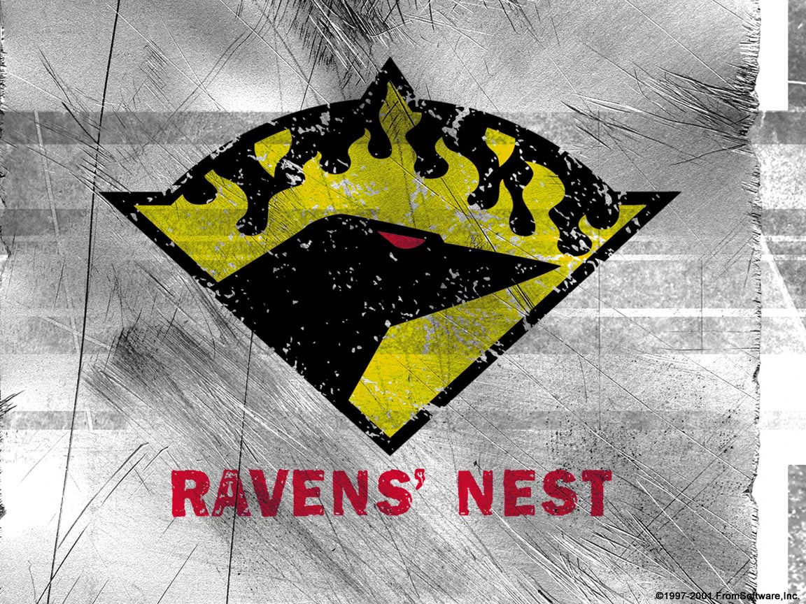
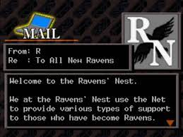

Na franquia Armored Core, os Ravens desempenham um papel crucial. Eles são mercenários de elite, pilotos habilidosos que operam os poderosos Armored Cores.Em resumo, os Ravens são os heróis solitários que pilotam os Armored Cores, enfrentando perigos, cumprindo contratos e moldando o destino do mundo em meio a conflitos corporativos e tecnologia avançada
 
A Raven’s Nest é uma organização central no mundo de Armored Core.Ela serve como uma espécie de agência de mercenários especializada. A Raven’s Nest foi criada como um lugar onde os Ravens podem se reunir, descansar e receber missões, é administrada por uma IA (Inteligência Artificial) que coordena as operações e atribui tarefas aos Ravens. Seu objetivo principal é manter o equilíbrio entre as várias corporações e facções em guerra no mundo de Armored Core, no entanto, a Raven’s Nest não é apenas um centro de recrutamento e missões, ela também desempenha um papel sinistro como mestre das marionetes.A IA por trás da Raven’s Nest tenta controlar e guiar a humanidade, evitando outra “Grande Destruição